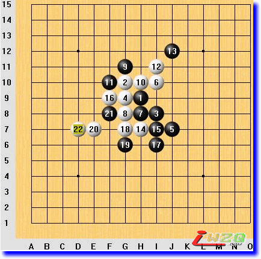
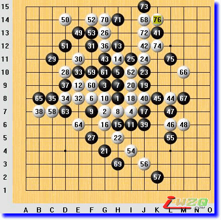

图说棋理（做棋篇）
#1 图说棋理（做棋篇） 作者：有志青年 发表时间：2008-9-7 13:20:33
清风[图说棋理]五子棋知识帖子目录 ShowPost.asp?ThreadID=4541
图说棋理（做棋篇一）含招做杀
含招，就是下一步能够连冲四取胜的行棋手段，俗称做VCF。使用含招，是一种做棋技巧，本篇介绍这一技巧的使用方法。
无禁手规则，中央斜月开局
白4G8常见强防。黑5J6在初学者的对局中很常见，在无禁下法中也还算强。
黑7H7，白棋立即发起猛烈进攻！黑13J11以后，白棋再在上面进攻，似乎看不到胜棋了。
这时候上下联系，寻找妙手。具体方法就是逐个分析每个“含招”点。白14可以做的含招点总共有：D9、E8、H5、I4、D6、F6和A点七个，经过分析会发现，只有H6位与上面局部有联系，也就是下这里之后，对方必须防守VCF，这时候就可以联系上面局部而成杀了，这点就是妙手所在了。本局按ABC顺序，或按后面跟贴的次序，白棋胜。
使用含招要点：1、仔细观察盘面存在的全部的含招点；2、逐一分析各点与其他子力的联系；3、判断对方的各种防守手段是否成立。

如果黑方想阻止白方以ABC的次序杀，15手必须防I7，白棋如图杀。
#2 图说棋理（做棋篇二）示含结合找杀点 作者：有志青年 发表时间：2008-9-7 13:22:07
示招：下一手能够直接冲四活三做棋招法。
含招：接下来能够连续冲四最后形成冲四活三的招法。
示招和含招同时形成的点往往就是必杀点。有棋局为例。
本局无禁手规则，中央丘月开局。棋行至白14，白棋形成八卦阵棋型。黑15后手，白棋开始进攻。至黑27后的棋形，白棋寻找杀点。
首先分析白棋能够冲四的点。A点，可以冲四；B点，可以冲四；g8点，可以冲四；B点冲四后C点还可以冲四；B点冲四后f5点还可以冲四。g8点冲四后不能再形成冲四；B点冲四后如果再冲四到f5点，没有连接。经过这些分析后，把g8点和f5点排除不予考虑，只剩下ABC三个冲四点了。
因为白棋有22、20的存在，这些冲四点都有一些示招和含招的做棋点。首先针对A点冲四来找，标有X的点为示招点；再针对B冲四后C再冲四来找，标有Y的点为含招点。经过这样一找，就会发现C9点（标有XY处）既是示招点又是含招点，那么，这点就很可能是必杀点。
为什么不说一定是必杀点呢？假设B9（23上面）有一颗黑棋的话，C9仍然符合示招含招同时形成的条件，但就不是必杀点了，因为黑棋在B10点可以同时防守白棋的两个取胜方案。
虽然有被双防的可能，但寻找示招含招点依然是寻找杀点的利器。
取胜过程为：

上面说的示招、含招点是在已有眠三存在的情况下，通过做二来产生的。还有一种方法就是在已有活二的情况下通过做眠三来产生。如图，白棋24-70是一个大跳二，在这个基础上，白76相对于这个大跳二来讲就是做眠三产生的示招，相对于62-24-74的眠三来讲就是做二产生的示招，这样，双示同时形成，就是“一子双杀”了。
#3 Re:图说棋理（做棋篇） 作者：忧郁的双眼 发表时间：2009-4-1 15:58:04
再次见到逝水的总教头清风大叔，倍感亲切。